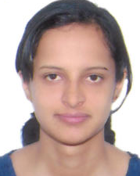

Smitha Jinnahalli Venugopal | CV
abcd@gmail.com, +46 778899117

Smitha JV is a Validation Engineer with six years of Testing experience in IoT, Mobile, Desktop and DTV Applications.
Passionate about learning, I enjoy being up to date with the latest technologies.
I am is eager to extend my knowledge in validating various systems,
as I think it’s an extremely exciting area where there is yet so much more to learn
and would like to apply such knowledge also to other fields such as automotive, artificial intelligence,
as well as multimedia(image/video/audio) processing systems. I believe that learning is a life-long process
and curiosity is one of my strengths which makes me willing to explore a broader area of topics and develop new interests.
| Specialist area: |
Multimedia(Audio-MP3,AAC.M4A,WMA/Video-MPEG2/4/TS/PS,H264,H.265,MKV,MOV,3GP/Image-JPEG,BMP,GIF)Codec. |
| Operating systems: |
Android,IOS, Windows and Ubuntu |
| Tools : |
Git, Linux, Jira, UR Tracker, TestRail, Change Synergy, Winscp, Network Link Conditioner,
Inet GPA, Vtunes, WireShark, Teraterm and Putty |
Oct 2017 - Oct 2018 Test Lead (Tata Elxsi, Bengaluru)
- Validating the Digital Signage application on Ubuntu Platform
primarily involved in writing system test plan document, system requirement specification,
performance and benchmarking test plan as per customer’s statement of work.
- System Level test cases written for various zones like audio-MP3/AAC/WMA, video-MPEG4, image-JPG/BMP/GIF, RSS, Ticker, Text and HTML5.
- Testing the Test Cases for different display orientation(s) like portrait and landscape with Identical,
different and Tiled configurations across multiple display units.
- UI, Application testing and capturing the Performance of CPU, Memory usage and FPS through enabled logs and top command.
- Identifying and reporting bugs through Jira.
- Participated in daily scrum.
Tools and environment - Git, Linux, Jira, Intel GPA, VTunes
Apr 2017 – Sep 2018 Test Lead (Tata Elxsi, Bengaluru)
- Validating the IoT Applications on Windows10 platform.
Involved in writing System Validation Test cases for sniffer and Simulator application to sniff out IoT packets
for various protocols like IoTivity, AllJoyn, MQTT and Echonet. The medium of communication is Ethernet and Wi-Fi.
- Testing the tool for updates of the property changes for the configured devices such as Air Conditioner, Audio,
Smart Lock and Network Camera in the network.
- Different tests mechanisms like Smoke, Sanity and Regressions were done during the course of the project.
- Identifying and reporting bugs through Jira.
Tools and environment - GIT, JIRA, Wireshark and Windows10
Jul 2016 – Mar 2017 Validation Engineer (Tata Elxsi, Bengaluru)
- Validated the Mobile based VIDYO Applications on IOS platform.
Tested the applications functionality for features such as video calling, screen sharing, conferencing, chatting,
PIP window adding and deleting the contacts, participants and setting up meeting room with different boundary
scenarios like different network conditions, for multiple network carriers.
- Wrote test cases to cover different aspects of the application using TestRail tool.
- Reported and Validated bugs in TestRail Tool.
Tools and environment - JIRA, TestRail, Network Link Conditioner and IOS Mobile phones
Oct 2015 – Apr 2016 Test Engineer (Tata Consultancy Services, Bengaluru)
- Test Engineer (Tata Consultancy Services, Bengaluru)
Patch deployment & application refreshment for different environments (RMS 9/10, RSS)
in coordination with testing team for SAINSBURY'S.
- Involved in Daily online environments health checks.
- Supported configuring tills and managing contact-less servers.
- Created complex JIRA workflows including project workflows, custom fields, screen schemas, and configure Projects and boards in JIRA.
- Involved in project administration like PVCS Admin Project creation, Confluence administration and configure space (TCS specific),
providing the access to developer, resolving client issues on admin tools.
Tools - JIRA and PVCS
Sep 2013 – Oct 2015 Test Engineer (TP Vision, Bengaluru)
- Involved in Testing of Development and Production Release Builds for Android Lollypop software. Worked in coordination with developers.
- Validated features like TAD, MSS, Wide Wine, Wifi Miracast, youtube, Netflix, Skype and other apps.
- Testing different use cases for proper Audio/Video streaming.
- Worked with Android CTS tool packages to generate test report for AndroidTV
- - Bug reporting and validating through Jira
Tools and environment - JIRA, Android CTS, Android TV, Android phones, and Tera term.
Dec2011 – Sep 2013 Test Engineer (TP Vision, Bengaluru)
- Smoke and functional testing on a daily basis
- Testing use case such as zapping between digital, analog channels, Content browsing using USB,
HDMI, VGA, satellite TV, teletext, PVR, Lip sync and PIP window.
- Testing of DLNA through various servers. Eg. (Twonky, VIAO, TVERSITY, Mediabolic, JVC, NERO, DMS, DMPR).
- Bug reporting and validating on UR Tracker.
Tools and environment - UR Tracker, Putty, Tera term, DLNA Servers, Speakers, QD, Hard disk and USB.
- 2010 – Bachelors in Electronics and Communications
- Address: 2345 blommorvagen,Sweden 10.
- Personal qualities: Responsible, problem-solver, analytical, determined, curious, open-minded.
- Language: English, Learning Swedish from Folk University
- Contact Details: abcd@gmail.com, +46 778899117